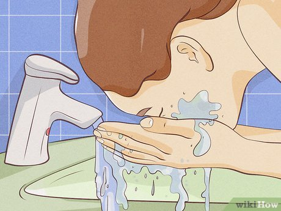
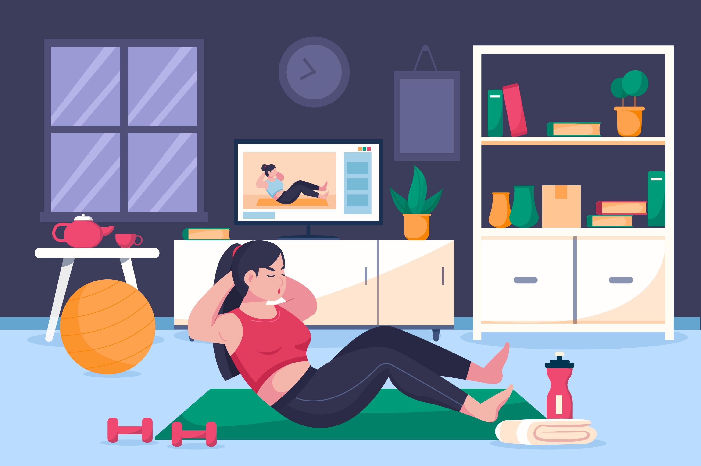
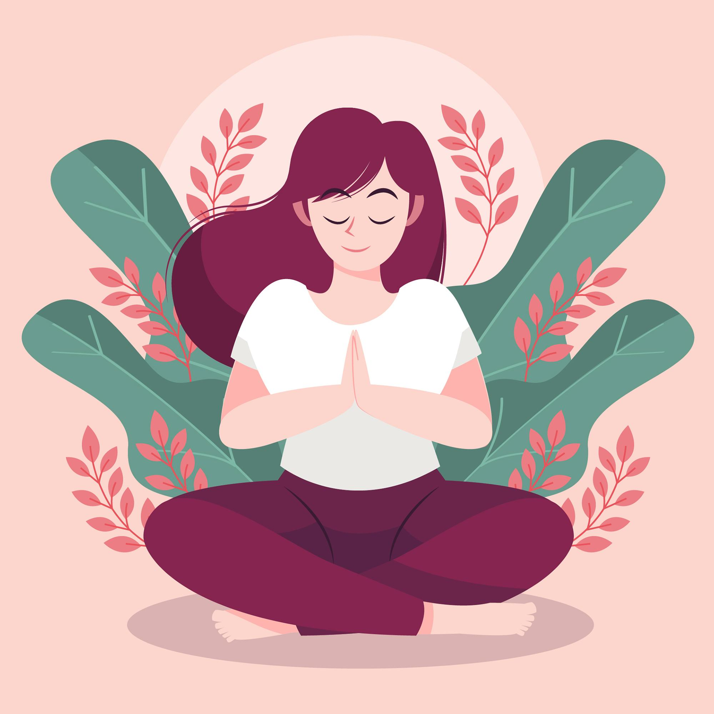
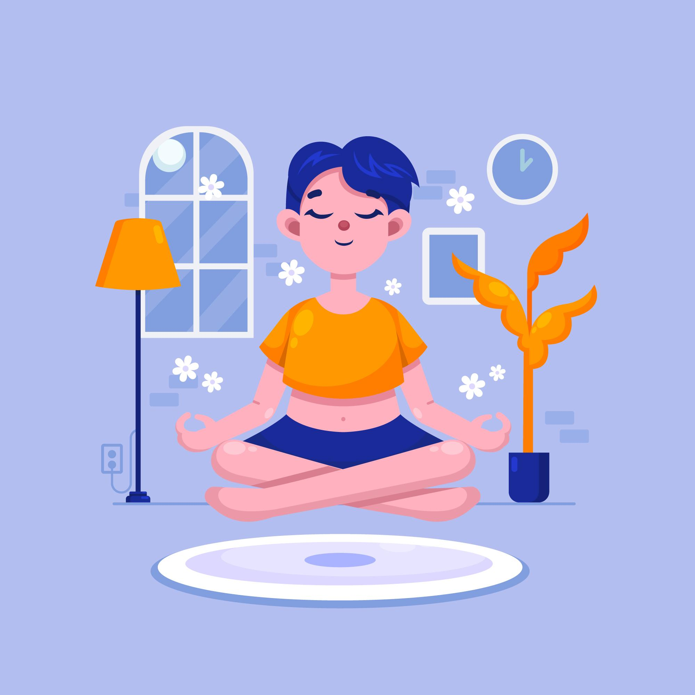
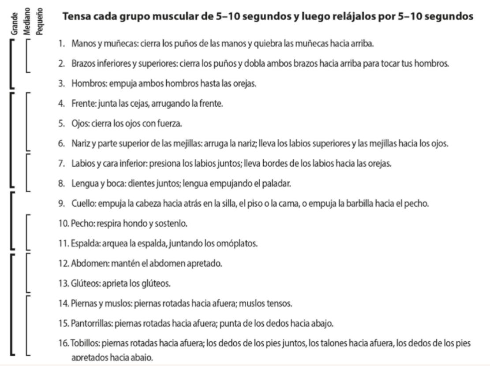
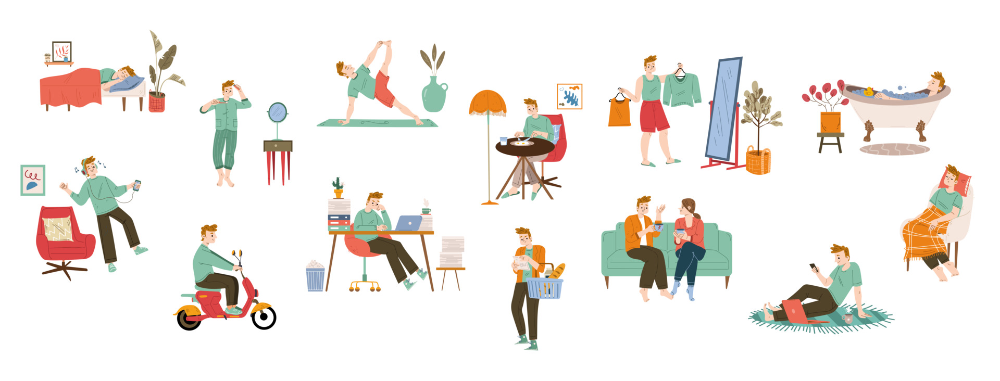

Recomendaciones generales
- Mantén tus rutinas básicas de autocuidado: sueño, alimentación y descanso.
- Planifica momentos de disfrute y relajación consciente.
- Refuerza tus límites personales y respeta tus espacios de pausa emocional.
- Recuerda que pedir ayuda o tomarte un tiempo también es una forma de autocuidado.

Cambia la Temperatura de tu cara con agua fría
Esta es una técnica que utiliza el contacto con el agua fría en el rostro para provocar una respuesta natural del cuerpo llamada “reflejo de inmersión”.
Cuando tu cara siente el agua fría, el cuerpo interpreta que estás bajo el agua, lo que activa una reacción automática que ralentiza el ritmo cardíaco y redistribuye el flujo sanguíneo hacia los órganos vitales (cerebro y corazón).
Este cambio físico genera una sensación de tranquilidad y control, ayudándote a bajar la intensidad emocional en momentos de angustia, enojo o impulsividad.
¿Cuándo puedes practicar esta técnica?
- • Cuando sientas una emoción muy intensa y agobiante.
- • Cuando tengas deseos de actuar impulsivamente.
- • Cuando necesites bajar la activación corporal.
Este ejercicio ayuda a bajar rápidamente la intensidad emocional cuando te sientes abrumada, ansiosa, muy triste o con el deseo de actuar de forma impulsiva.
¡Vamos a hacerlo!
Mientras contienes la respiración, Sumerge tu rostro en un recipiente con agua fría o coloca una compresa fría sobre ojos y mejillas.
Mantén el contacto con el frío por 30 segundos asegurandote que la temperatura sea mayor a 10 °C.
Observa los cambios: Tu corazón late más lento, tu respiración se estabiliza y la sensación de urgencia o desborde disminuye.
Si no puedes usar agua en el rostro, aplica frío en las manos o en la nuca.
Finaliza con respiración lenta: Retira el agua o la compresa y respira suavemente.
Nota cómo el cuerpo se siente más liviano, más presente y tranquilo.

Ejercicio intenso
Usa el ejercicio cuando estés agitado, cuando estés enojado, cuando no puedas detener el rumiar, cuando necesites mejorar tu estado de ánimo y disposición por la mañana, y en cualquier otro momento en el que te haya sido útil en el pasado.
El estado de ansiedad disminuye significativamente si aumenta tu frecuencia cardíaca al 70 % del máximo.

Respiración Pausada rítmica
Cuando respiras más lento y profundo, el cuerpo recibe la señal de que no hay peligro inmediato. Esto activa el sistema de calma (parasimpático).
¡Vamos a hacerlo!
Inhala por la nariz contando 4 segundos.
Sostén el aire 2 segundos.
Exhala por la boca lentamente durante 6 segundos.
Repite el ciclo 5 veces.
Mientras respiras, nota el aire entrando y saliendo.
Nota el peso de tu cuerpo en la silla y los puntos de apoyo pies, espalda y manos.

Aprendiendo a soltar la tensión del cuerpo a través de la Relajación Muscular en Paralelo
Este ejercicio te ayuda a calmar el cuerpo y la mente, liberando la tensión acumulada por el estrés o las emociones intensas.
"Cuando el cuerpo se relaja, la mente también encuentra un espacio para descansar."
¿Cuándo puedes practicar esta técnica?
- • Antes o después de una situación difícil.
- • Cuando sientas el cuerpo rígido o el corazón acelerado.
- • Como parte de tu rutina diaria de bienestar.
¡Vamos a hacerlo!
Siéntate o recuéstate en una posición cómoda.
Puedes cerrar los ojos y tomarte un tiempo para conectar con tu respiración.
Activa tu cuerpo: Tensa varios grupos de músculos al mismo tiempo (por eso el nombre activación en paralelo) .
Aprieta puños, lleva los hombros hacia arriba, contrae abdomen lo que más puedas (fíjate en la siguiente sección los grupos musculares).
Mantén la tensión durante 5 a 10 segundos.
Exhala y deja ir toda la tensión de golpe.
Observa las sensaciones de alivio, calor o ligereza que aparecen.
Termina con tres respiraciones lentas.
Imagina que con cada exhalación tu cuerpo se vuelve más liviano y tranquilo.

Aquí encuentras los grupos de músculos:
Practica tensar y relajar cada grupo muscular (primero los pequeños, luego medianos y grandes) observando las sensaciones durante 10–15 segundos. Cuando logres hacerlo con todo el cuerpo, alterna entre sentirte como un robot (tenso) y una muñeca de trapo (relajada). Repite el ejercicio 3–4 veces al día hasta poder relajarte rápidamente.
Técnica STOP — Detente, Respira y Observa
Utilízala para evitar respuestas impulsivas durante conflictos o discusiones.
(Stop): Detente antes de actuar o responder de forma automática.
(Take a breath): Respira profundamente para regular tu cuerpo.
(Observe): Nota qué estás sintiendo y pensando.
(Proceed): Actúa desde la calma, no desde la emoción.
Recuerda

"Esta guía es un mapa para los días difíciles. No busca que el dolor desaparezca mágicamente, sino que aprendas a caminar con él sin que tome el mando de tu vida. No necesitas hacerlo perfecto; solo necesitas estar presente..."